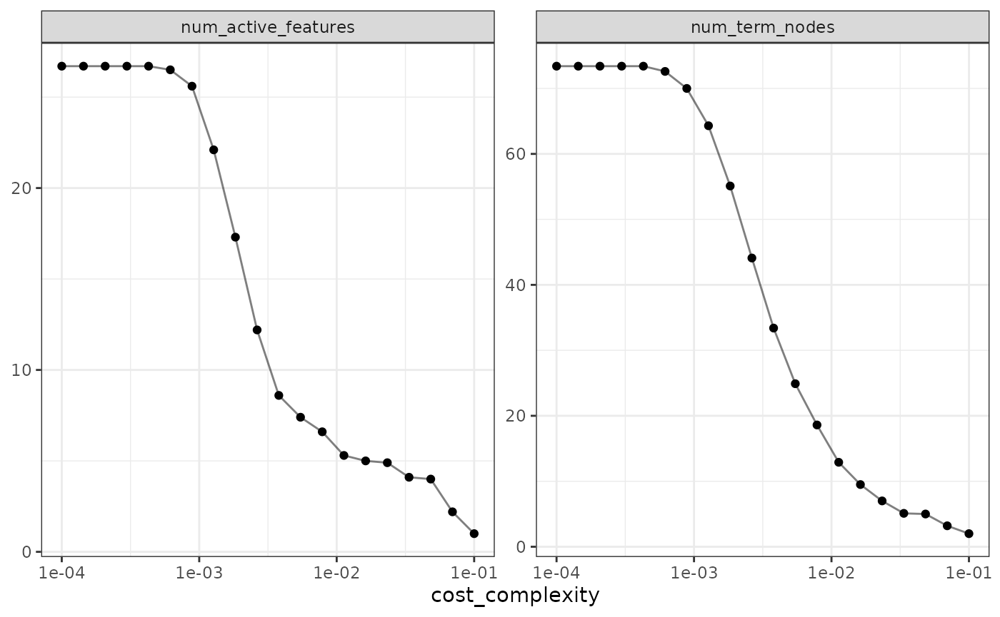

Using characterize with tidymodels
Using_characterize_with_tidymodels.Rmd
data(ames)
ames <-
ames %>%
mutate(Sale_Price = log10(Sale_Price))
set.seed(1)
ames_split <- initial_split(ames)
ames_train <- training(ames_split)
ames_test <- testing(ames_split)
set.seed(2)
ames_rs <- vfold_cv(ames_train)
cart_spec <-
decision_tree(cost_complexity = tune()) %>%
set_mode("regression")
ctrl <- control_grid(save_workflow = TRUE, extract = retain_characteristics)
cart_res <-
cart_spec %>%
tune_grid(
Sale_Price ~ .,
resamples = ames_rs,
grid = tibble(cost_complexity = 10 ^ seq(-5, -1, length.out = 20)),
control = ctrl
)
cart_res## # Tuning results
## # 10-fold cross-validation
## # A tibble: 10 × 5
## splits id .metrics .notes .extracts
## <list> <chr> <list> <list> <list>
## 1 <split [1977/220]> Fold01 <tibble [40 × 5]> <tibble [0 × 3]> <tibble>
## 2 <split [1977/220]> Fold02 <tibble [40 × 5]> <tibble [0 × 3]> <tibble>
## 3 <split [1977/220]> Fold03 <tibble [40 × 5]> <tibble [0 × 3]> <tibble>
## 4 <split [1977/220]> Fold04 <tibble [40 × 5]> <tibble [0 × 3]> <tibble>
## 5 <split [1977/220]> Fold05 <tibble [40 × 5]> <tibble [0 × 3]> <tibble>
## 6 <split [1977/220]> Fold06 <tibble [40 × 5]> <tibble [0 × 3]> <tibble>
## 7 <split [1977/220]> Fold07 <tibble [40 × 5]> <tibble [0 × 3]> <tibble>
## 8 <split [1978/219]> Fold08 <tibble [40 × 5]> <tibble [0 × 3]> <tibble>
## 9 <split [1978/219]> Fold09 <tibble [40 × 5]> <tibble [0 × 3]> <tibble>
## 10 <split [1978/219]> Fold10 <tibble [40 × 5]> <tibble [0 × 3]> <tibble>
model_char <- collect_characteristics(cart_res)
model_char## # A tibble: 40 × 7
## cost_complexity .metric .estimator mean n std_err .config
## <dbl> <chr> <chr> <dbl> <int> <dbl> <chr>
## 1 0.00001 num_active_features model 40.2 10 0.573 Preproces…
## 2 0.00001 num_term_nodes model 168. 10 1.08 Preproces…
## 3 0.0000162 num_active_features model 40.2 10 0.573 Preproces…
## 4 0.0000162 num_term_nodes model 167. 10 1.09 Preproces…
## 5 0.0000264 num_active_features model 40.1 10 0.547 Preproces…
## 6 0.0000264 num_term_nodes model 167. 10 1.12 Preproces…
## 7 0.0000428 num_active_features model 40.1 10 0.547 Preproces…
## 8 0.0000428 num_term_nodes model 165. 10 0.975 Preproces…
## 9 0.0000695 num_active_features model 39.2 10 0.389 Preproces…
## 10 0.0000695 num_term_nodes model 160. 10 0.969 Preproces…
## # … with 30 more rows
model_char %>%
ggplot(aes(cost_complexity, mean)) +
geom_point() +
geom_line(alpha = 1 / 2) +
facet_wrap(~ .metric, scales = "free_y") +
scale_x_log10() +
labs(y = NULL)
metric_and_char <- collect_characteristics(cart_res, add_metrics = TRUE)
metric_and_char## # A tibble: 80 × 7
## cost_complexity .metric .estimator mean n std_err .config
## <dbl> <chr> <chr> <dbl> <int> <dbl> <chr>
## 1 0.00001 num_active_features model 40.2 10 0.573 Prepro…
## 2 0.00001 num_term_nodes model 168. 10 1.08 Prepro…
## 3 0.00001 rmse standard 0.0838 10 0.00259 Prepro…
## 4 0.00001 rsq standard 0.779 10 0.0104 Prepro…
## 5 0.0000162 num_active_features model 40.2 10 0.573 Prepro…
## 6 0.0000162 num_term_nodes model 167. 10 1.09 Prepro…
## 7 0.0000162 rmse standard 0.0838 10 0.00259 Prepro…
## 8 0.0000162 rsq standard 0.779 10 0.0104 Prepro…
## 9 0.0000264 num_active_features model 40.1 10 0.547 Prepro…
## 10 0.0000264 num_term_nodes model 167. 10 1.12 Prepro…
## # … with 70 more rows
metric_and_char %>%
ggplot(aes(cost_complexity, mean)) +
geom_point() +
geom_line(alpha = 1 / 2) +
facet_wrap(~ .metric, scales = "free_y") +
scale_x_log10()+
labs(y = NULL)
rmse_vs_vars <-
metric_and_char %>%
filter(.metric %in% c("rmse", "num_active_features")) %>%
select(.metric, mean, .config, cost_complexity) %>%
pivot_wider(
id_cols = c(.config, cost_complexity),
names_from = .metric,
values_from = mean
)
rmse_vs_vars## # A tibble: 20 × 4
## .config cost_complexity num_active_features rmse
## <chr> <dbl> <dbl> <dbl>
## 1 Preprocessor1_Model01 0.00001 40.2 0.0838
## 2 Preprocessor1_Model02 0.0000162 40.2 0.0838
## 3 Preprocessor1_Model03 0.0000264 40.1 0.0838
## 4 Preprocessor1_Model04 0.0000428 40.1 0.0838
## 5 Preprocessor1_Model05 0.0000695 39.2 0.0838
## 6 Preprocessor1_Model06 0.000113 38.7 0.0837
## 7 Preprocessor1_Model07 0.000183 37.7 0.0838
## 8 Preprocessor1_Model08 0.000298 35 0.0838
## 9 Preprocessor1_Model09 0.000483 31.5 0.0846
## 10 Preprocessor1_Model10 0.000785 26.2 0.0849
## 11 Preprocessor1_Model11 0.00127 19.8 0.0854
## 12 Preprocessor1_Model12 0.00207 14.7 0.0872
## 13 Preprocessor1_Model13 0.00336 10.9 0.0900
## 14 Preprocessor1_Model14 0.00546 9.3 0.0924
## 15 Preprocessor1_Model15 0.00886 6.8 0.0971
## 16 Preprocessor1_Model16 0.0144 5.9 0.0989
## 17 Preprocessor1_Model17 0.0234 4.2 0.105
## 18 Preprocessor1_Model18 0.0379 3.7 0.111
## 19 Preprocessor1_Model19 0.0616 2 0.120
## 20 Preprocessor1_Model20 0.1 2 0.120
rmse_vs_vars %>%
ggplot(aes(num_active_features, rmse)) +
geom_point() +
geom_line(alpha = 1 / 2) +
geom_hline(yintercept = 0.085, lty = 2, col = "green")
## # A tibble: 1 × 4
## .config cost_complexity num_active_features rmse
## <chr> <dbl> <dbl> <dbl>
## 1 Preprocessor1_Model10 0.000785 26.2 0.0849